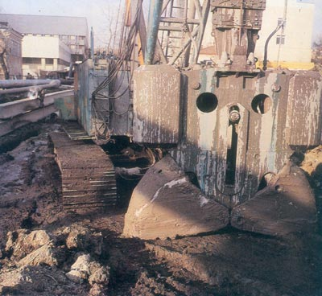
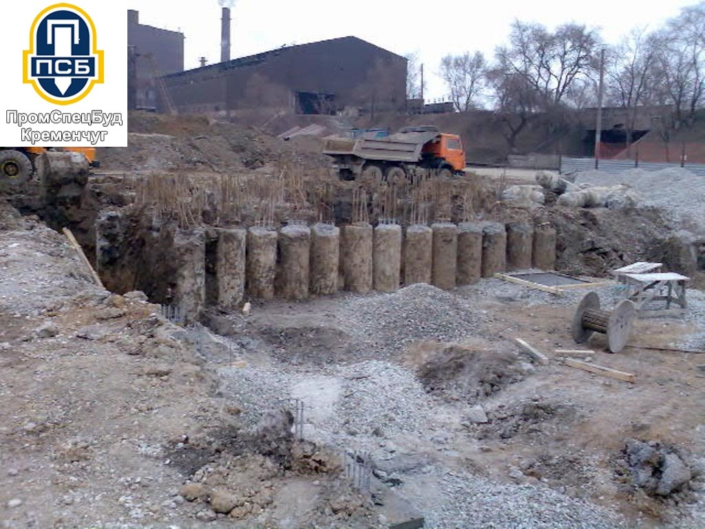

Wykonujemy pełen zakres prac palowych: pale wbijane, wiercone i CFA. Własna flota młotów hydraulicznych Junttan i Bruce zapewnia rekordową wydajność — do 5 000 m³ pali miesięcznie.

Firma została założona 11 marca 2003 roku pod stałym kierownictwem dyrektora Wiktora Kuzika. Przez ponad dwie dekady przeszliśmy drogę od lokalnej brygady do jednego z największych wyspecjalizowanych przedsiębiorstw fundamentowych na Ukrainie.
Nie trwonimy środków, lecz stale inwestujemy w najnowocześniejszy sprzęt światowych marek: Bauer RG-20, O&K RH-25, Hitachi, Junttan, Bruce, Schwing. Kompleksowe podejście inżynieryjne głównego inżyniera Wiaczesława Pelechania pozwala optymalizować projekty pól palowych i znacząco oszczędzać budżet klienta.
Wykonujemy pełen zakres prac cyklu zerowego i budowy głębokich fundamentów w dowolnych warunkach geologicznych Ukrainy.
 Główna specjalizacja
Główna specjalizacja
Wbijanie żelbetowych pali pryzmatycznych o przekroju 300×300, 350×350, 400×400 mm, pełnych do 15 m i łączonych do 24 m. Rekordowa prędkość dzięki młotom hydraulicznym Junttan i Bruce.
 Wysoka nośność
Wysoka nośność
Wykonywanie pali o dużej średnicy metodą wiercenia ślimakowego lub łyżkowego z rurami obsadowymi. Idealne do podpór mostowych, ciężkich obiektów przemysłowych i ścian oporowych.
 Technologia CFA
Technologia CFA
Wykonywanie pali w technologii CFA (ciągły świder rurowy) w zestawie z wydajną pompą do betonu Schwing BPL 160-HD. Zapewnia wysoką prędkość i brak wibracji w pobliżu sąsiednich budynków.
 Trudne grunty
Trudne grunty
Wstępne wiercenie otworów prowadzących urządzeniami SP-49 i SP-47 z głowicą wiertniczą SO-2. Umożliwia wbijanie pali przez gęste warstwy piasku, gliny lub nasypu bez ryzyka uszkodzenia pala.
 Kontrola jakości
Kontrola jakości
Badania statyczne i dynamiczne pali w skali naturalnej zgodnie z DBN i DSTU. Własne ciężkie stanowiska, siłowniki hydrauliczne, ugięciomierze i stacje tensometryczne z oficjalnymi protokołami i wykresami osiadania.
 Cicho i bez wibracji
Cicho i bez wibracji
Pogrążanie pali metodą statycznego wciskania z siłą do 320 ton lub wciskanie w rurze obsadowej z traconą końcówką (Fundex). Jedyna bezpieczna metoda bezpośrednio przy budynkach awaryjnych lub zabytkowych.

Budownictwo podziemneWykonywanie nośnych i przeciwfiltracyjnych obudów głębokich wykopów, parkingów podziemnych i węzłów komunikacyjnych. Montaż tymczasowych i stałych kotew gruntowych do niezawodnego mocowania ścianek szczelnych.
 Pod klucz
Pod klucz
Kompleksowe przygotowanie podłoża: wykopy, wywóz i niwelacja gruntu, zmechanizowane ścinanie głowic pali, zbrojenie i betonowanie masywnych monolitycznych rostwerków pod słupy i silosy.
Gwarantujemy dotrzymanie najsurowszych harmonogramów budowy i bezkompromisową jakość każdego pogrążonego elementu.
Własna flota młotów hydraulicznych Junttan, BSP i BRUCE zapewnia precyzyjnie regulowaną energię udaru. Są 5× wydajniejsze od młotów spalinowych i nie niszczą głowic pali.
Wyłączne kontrakty bezpośrednie z koreańskim producentem sprzętu hydraulicznego Powerquip. Własna baza serwisowo-naprawcza zapewnia 100% ciągłość pracy sprzętu.
Dysponujemy pełną flotą dźwigów (16–25 t), ciężkich spychaczy, ciężarówek, agregatów prądotwórczych i modułów socjalnych. Nie zależymy od podwykonawców.
Przy przygotowanym dojeździe i zaliczce mobilizujemy sprzęt i rozpoczynamy wbijanie pali w dowolnym obwodzie Ukrainy w ciągu 3–4 dni kalendarzowych.
Nasi główni inżynierowie pomagają klientom znaleźć racjonalne rozwiązania projektowe pól palowych, zmniejszyć materiałochłonność i uniknąć błędów geologicznych.
Posiadamy ważne licencje państwowe i zezwolenia dozoru technicznego na prace podwyższonego ryzyka. Wydajemy pełną dokumentację powykonawczą z protokołami i dziennikami wbijania.
Nowoczesne urządzenia do wbijania, wciskania i wiercenia pali, gwarantujące nieprzerwane tempo prac o każdej porze roku.

Maszyny bazowe Hitachi i Junttan wyposażone w nowoczesne młoty hydrauliczne o masie bijaka od 3 do 7 ton.
| Energia udaru: | do 85 kJ (regulowana) |
| Długość pala: | do 16 m (pełny), do 24 m (łączony) |
| Wydajność: | do 40–60 pali na zmianę |
Niemiecki kompleks wiertniczy z obrotnicą WG-8 w połączeniu z pompą do betonu Schwing BPL 160-HD do pali CFA.
| Technologia: | CFA (ciągły świder) |
| Średnica wiercenia: | 400 – 800 mm |
| Głębokość pali: | do 20 metrów |

Wydajna niemiecka maszyna z głowicą wiertniczą BB-10 do wykonywania pali wierconych pod ochroną rur obsadowych.
| Moment obrotowy: | do 250 kNm |
| Średnica pali: | do 1200 mm |
| Głębokość: | do 28 metrów |
Setki ukończonych obiektów dla liderów agrobiznesu, hutnictwa, handlu i budownictwa mieszkaniowego na terenie całej Ukrainy.
Pola palowe pod silosy o pojemności 50–100 tys. ton. Dziesiątki tysięcy pali wbijanych o przekroju 350×350 i 400×400 mm.
Szybkie pogrążanie fundamentów palowych pod konstrukcje dużych centrów handlowych przy ścisłym dotrzymaniu harmonogramu otwarcia.
Fundamenty palowe pod ciężkie urządzenia technologiczne, walcownie i konstrukcje hal w warunkach działającej produkcji.
Wykonywanie pali wbijanych i wierconych, obudowa wykopów ściankami szczelnymi dla instalacji rafineryjnych i zbiorników.
Pola palowe dla 9–16-kondygnacyjnych osiedli monolityczno-szkieletowych i ceglanych z infrastrukturą dla dzieci.
Łączone pale wbijane o długości do 20 metrów pod ciężkie silosy magazynów zbożowych na trudnych gruntach.
Kliknij zdjęcie, aby zobaczyć je w pełnym rozmiarze i wysokiej rozdzielczości.





Prześlij nam dane badań geologiczno-inżynierskich i obciążenia projektowe — nasi główni inżynierowie obliczą optymalny typ pali, ich liczbę i kosztorys w ciągu 24 godzin.
Wiaczesław Pelechań:+38 (067) 532-97-90
Kierownik działu techn. Wałentyn Owsiannikow:+38 (067) 530-50-58
Przyjmujemy rysunki w formatach DWG, PDF, ZIP
Kremieńczuk, obwód połtawski, Ukraina
Szybka mobilizacja sprzętu na terenie całej Ukrainy
Wypełnij formularz, a nasz specjalista wkrótce oddzwoni.